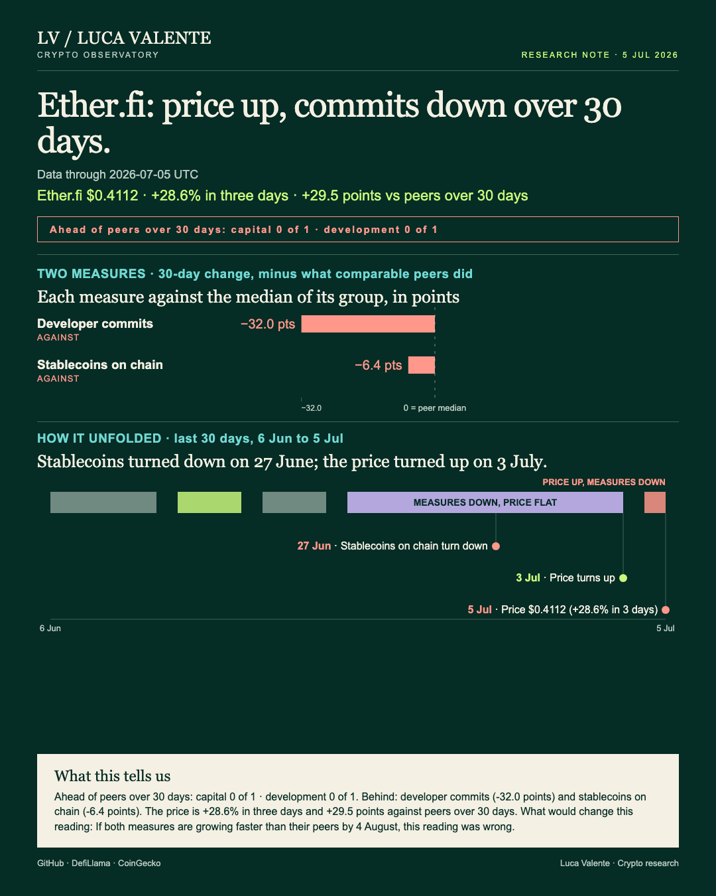
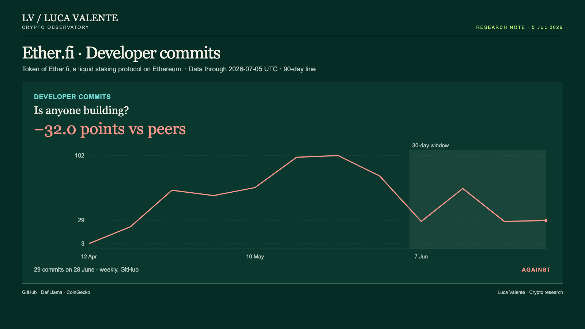
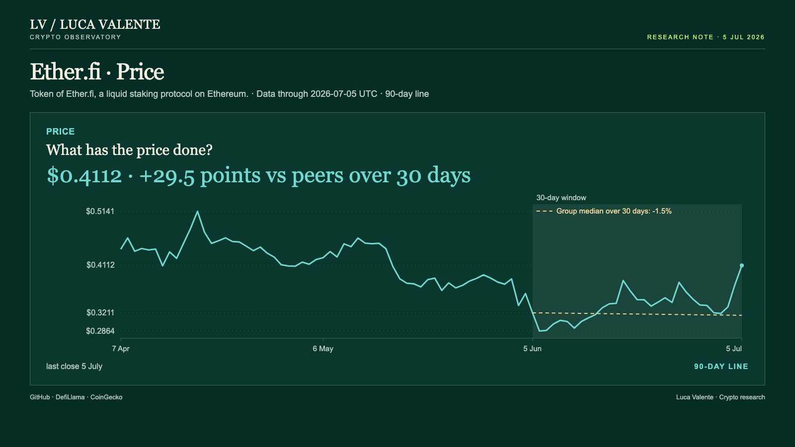

Training note, written on 24 September 2026 from data as of 5 July 2026. Not part of the published series.
Ether.fi's Token Climbs While The Lines I Can See Slip

Ether.fi's token ran ahead of its liquid staking group over the past month, while both measures I have for the protocol fell behind it. One of them is not even Ether.fi's own. For anyone holding ETHFI, the token of an Ethereum protocol that stakes users' ether and gives them a tradable receipt, the question is how much of that climb these numbers can speak to. Very little.
Both bars on the cover start from a zero line, the group median, and run to its left: developer commits 32.0 points below it, stablecoins on Ethereum 6.4 below. Only the price is on the plus side. ETHFI stood at $0.4112 on 5 July, up 28.6% in three days and 28.1% over 30 days, against -1.5% for the median of the nine listed liquid staking tokens, ETHFI included. A gap of 29.5 points.
Each measure is compared only with the members of Ether.fi's group, 34 liquid staking entities in all, that report it, Ether.fi included. I read the two apart. Commits are development, code changes logged weekly in the project's public repositories; stablecoins are capital, the dollar value of stablecoins sitting on a protocol's chain. Usage, meaning fees or trading volume, is not in these numbers.
Development turned first: commits turned down in the week beginning 31 May and fell in 3 of 5 weeks to 4 July, for a 30-day change of -53.8%. Capital came next. The cover's timeline marks it: stablecoins on Ethereum turned down on 27 June, fell on 8 of 9 days to 5 July and ended the 30 days 3.3% lower. ETHFI turned up last, on 3 July, and rose three days running, to the 28.6% at the timeline's right edge.
Against a group median of -21.9% across the 13 liquid staking entities that report commits, Ether.fi included, that fall leaves Ether.fi 32.0 points behind. It counts for less than it seems. Over the last twelve complete weeks the count ran from 3, in the week of 12 April, to 102, in the week of 24 May. A line that jumpy can fall hard in a month on noise alone.

Capital means the stablecoins held on Ethereum, $154.16 billion on 5 July; their 30-day fall compares with a median rise of 3.1% across the 31 group members reporting them, Ether.fi included. That is 6.4 points behind. In 90 days the total ranged from $154.07 billion on 3 July to $168.70 billion on 19 April. A plain caveat, though: it's Ethereum's figure, describing the chain Ether.fi runs on and not Ether.fi itself.
Over 90 days ETHFI peaked at $0.5141 on 18 April and touched a low of $0.2864 on 6 June, and 5 July alone added 9.8%, from $0.3744 to $0.4112. Nothing here says why. The numbers carry no news, no announcement and no reason, and I will not supply one.

Missing from this data are the lines that would describe Ether.fi from the inside: value locked, fees, and any count of users or wallets. None is here. Without them I cannot say whether the protocol grew or shrank over the month, and nothing in these numbers reaches past 5 July. That limits what this note can claim.
This note's weakest point is the commit line, the one measure here that is Ether.fi's own: 29 commits in the latest complete week, against 28 the week before. Two weekly counts make no trend. That line, with the chain's stablecoins beside it, is where it could come apart. If both measures are growing faster than their peers by 4 August, this reading was wrong.
What I am describing is a token rising while capital and development fall, and two measures ahead of their groups by that date would close that split. Until then, the climb in ETHFI rests on ground that the two lines in this note cannot see. Neither can I.
Sources: GitHub (developer commits), DefiLlama (stablecoins on Ethereum), CoinGecko (price).
Peer group: 34 liquid staking protocols tracked by DefiLlama. 'Net of the group' is the 30-day change minus the group's median.
Not financial advice. This is a research note based on public on-chain data.